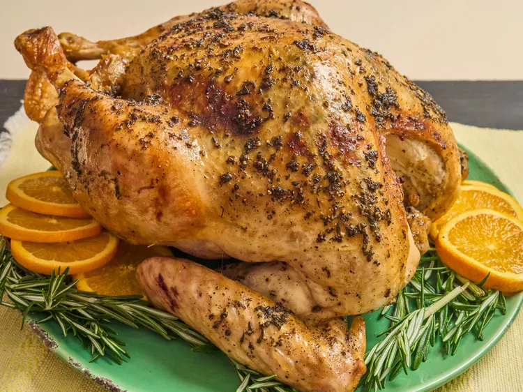

Roasted Turkey with Gravy

Description
This roasted turkey and gravy gets its rich, savory flavor from herb butter flavored with bouillon, fresh sage,
thyme, and rosemary that is rubbed under and over the skin. The pan drippings turn into a flavorful homemade gravy.
Ingredients
- 1 (12 to 14 pound) turkey, neck and giblets removed
- 1 cup softened butter
- 4 teaspoons chicken bouillon granules (such as Knorr), divided
- 1 tablespoon finely chopped fresh sage
- 1 1/2 teaspoons finely chopped fresh thyme
- 1 teaspoon finely chopped fresh rosemary
- 2 teaspoons salt, divided, plus more to taste
- 1 tablespoon pepper, divided, plus more to taste
- 2 cups chicken stock
Steps
- Preheat the oven to 325 degrees F (160 degrees C).
Rinse and pat turkey dry with paper towels very well inside and out.
- In a bowl, combine butter with 2 teaspoons bouillon, herbs, 1 teaspoon salt, and
2 teaspoons pepper; stir until well combined.
- Carefully loosen the turkey skin to separate the skin from the meat on the breasts and thighs.
Place a couple of tablespoons of the butter mixture under the skin on each breast and press to rub the butter evenly underneath the skin.
Repeat under the skin over the thigh meat.
- Rub remaining butter as evenly as possible all over the outside of the turkey.
- Sprinkle 1 teaspoon bouillon, salt, and pepper inside the turkey cavity.
Fill cavity with onion, celery and lemon. If desired, tie turkey legs together with twine.
- Set turkey on a wire rack set inside of a roasting pan and place the turkey in the oven.
- Bake until turkey is lightly browned, 1 to 1 1/2 hours. Pour broth into the pan and loosen any browned bits.
Baste turkey with the liquid and continue roasting, basting every 40 minutes,
until no longer pink at the bone and the juices run clear, about 2 hours.
An instant-read thermometer inserted into the thickest part of the thigh, near the bone,
should read at least 165 degrees F (74 degrees C).
- Remove from the oven, cover with a doubled sheet of aluminum foil, and allow
to rest in a warm area for 25 to 30 minutes before slicing.
- Strain drippings from the pan and add enough water to make 2 cups. Add liquid to a small
sauce pan and whisk in remaining bouillon granules until they are dissolved.
- Set saucepan over medium-high heat and bring to a simmer, stirring occasionally. /li>
- Whisk together 2 tablespoons of cold water with cornstarch until dissolved.
Whisk mixture into broth mixture and return to a simmer for 2 minutes.
Season to taste with salt and pepper if needed. Serve gravy with the turkey.
Home